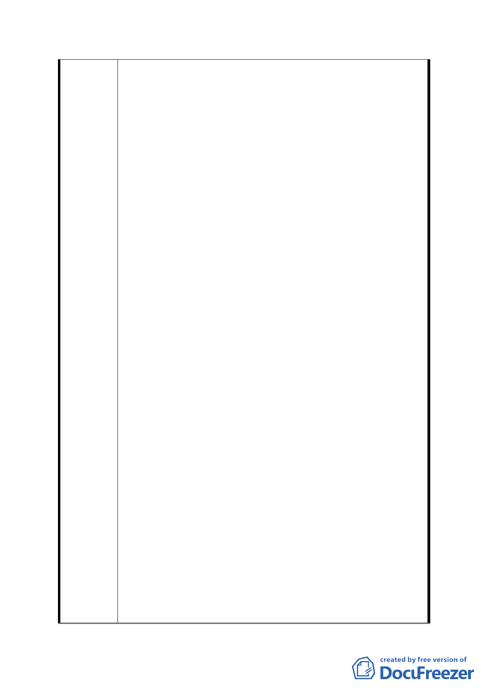

請查照。
說明：
一、旨揭第654次委員會議審議過程中，發言委員確實不斷
提出「解除整體開發後回饋應重新審視」、「威京幫忙捐
百分之三十的權利變換價值」、「分開後各繳各的回饋
金」、「個別計畫，但是不要影響原來捐獻的百分之三十
的權益」、「需有彌補機制、如折算容積率等」、「開發人
需自行捐贈」等提議，並有委員要求將其提案列入審議
結論；且貴會102年12月10日召開之專案小組會議做成
相關五點決議送大會進行合議研討。
二、然查，本次會議主席張副市長金鶚先生，對於前揭發言
委員就解除整體開發後所產生的各種回饋金爭議、捐地
爭議，及就原捐地者折算容積率之提議及小組討論轉呈
議題等一概置之不理，即強行裁示通過都發局所提之計
畫書，解除威京公司整體開發。會議過程中，多數發言
委員皆對解除整體開發後所可能產生權利侵害之結果
相當重視，顯見將整體開發解除對原捐地者所造成之權
利侵害實應與解除整體開發一併處理。張副市長無視多
數發言委員的意見及內容已屬違法。
三、次查，本公司異議有關都發局提出公展資料書圖未經法
定程序任意變更為「商三特」爭議部分，本次會議未經
當天委員會討論決議，而當天主席特別宣示不處理整體
開發解除以外之事項，會議中亦無就計劃範圍內土地如
何從「商三」變更為「商三特」進行討論或審議，且都
發局亦未提出解釋，都發局顯有魚目混珠，企圖造成前
揭委員會議已將計劃區內土地更改為「商三特」之錯誤
印象，如此直接造成計劃範圍內全部土地所有權人權益
損害，都發局此行實有可議。
四、本次會議僅就整體開發進行討論，本公司異議有關都發
局提出公展資料書圖未經法定程序即變更原計畫書容
積率爭議部分，都發局於提出之補充會議資料之中就擬
建議處理的回覆內容將80年2月13日公告計畫書之容積
率 文 字 部 份 錯 誤 認 定 為 「 392 ％ 」 而 非
「 392%(70%x560% ）」， 此 亦 與 原 公 告 之 計 畫 書 內 容 不
符，實為斷章取義，企圖混淆視聽，誤導長官及委員，
並以此不法方式造成既定事實之虞。
五、本公司自京都公司買受計畫範圍內之土地，不論向銀行
進行貸款或公司價值估算，皆係以容積率560％計算，
-5-